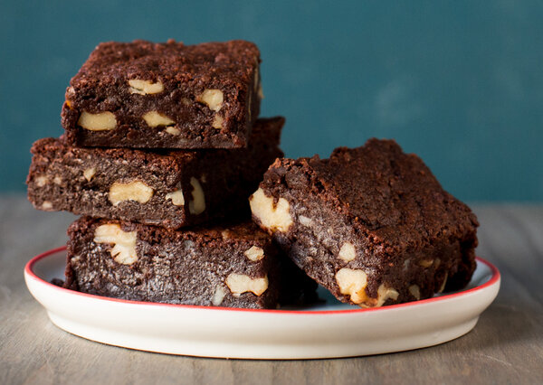

Nami-nami
| Amount |
Ingredient |
| 200 g |
Melted butter |
| 200 g |
Sugar |
| 200 g |
Dark chocolate (70%) |
| 3 |
Eggs |
| 100 g |
Flour |
| 100 g |
Chopped nuts |
| 0,5 tbsp |
Salt |
- Step - Line a 24x24 cm cake tin with baking paper and heat the oven at 170˚C.
- Step - Melt the butter and chocolate in a water bath.
- Step - Whisk the eggs and sugar into the foam with an electric mixer. Add the melted chocolate-butter mixture and stir until smooth.
- Step - Add flour, salt and chopped nuts, mix until completely smooth.
- Step - Pour the dough into a form and bake in a 170 degree oven for 30-35 minutes until the cake feels dry on top.
